Advanced engineering mathematics HW.1
Programer: PO-HSUN WU Last edit date: 2021/09/29 20:40
Contents
#1
---------------------------------------
#1(a)
clear;clc;close all
fun1 = @(n) (-3/5)^(n-1);
x1 = limsum(fun1, 1);
#1(b)
clear;clc;close all
fun2 = @(n) (4/9)^(n-1);
x2 = limsum(fun2, 1);
Iteration times: 19 Value: 1.800000 Error: 0.000000
#1(c)
clear;clc;close all
fun3 = @(n) sin(n*pi()/2)/n;
x3 = limsum(fun3, 1);
Iteration times: 2 Value: 1.000000 Error: 0.000000
#1(d)
clear;clc;close all sum = 1; n = 1; x = []; while 1 error = 1; for i = 1:2:2*n error = error*(i/(i+1)); end error = (-1)^n*(1+4*n)*error^3; sum = sum + error; if abs(error) < 1e-3 break end n = n+1; end fprintf("Iteration times: %d \nValue: %f \nError: %f\n\n", n, sum, error);
Iteration times: 516025 Value: 0.636120 Error: -0.001000
#2
---------------------------------------
#2(a)
clear;clc;close all z = 0:0.0001:20; J0 = besselj(0,z); plot(z,J0) grid() title("Zero order of Bessel function") roots_ans = []; count = 0; for i = 1:length(J0)-1 if J0(i)*J0(i+1)<0 count = count+1; roots_ans(count) = i; end end for i = 1:3 fprintf("lambda%d = %.4f\n",i,z(roots_ans(i))) end
lambda1 = 2.4048 lambda2 = 5.5200 lambda3 = 8.6537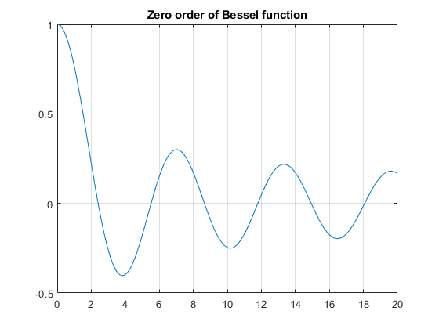
#2(b)
clear;clc;close all lambda = 0:0.01:400; y1 = tan(sqrt(lambda)*log(2)/2); y2 = tan(sqrt(lambda)*log(2)); error = abs(y1-y2); count = 1; for i = 1:length(error) if error(i) <= 5e-5 fprintf("lambda_%d = %f\n", count, lambda(i)) count = count+1; figure() if i-100 <= 0 plot(lambda(i:i+100),y1(i:i+100),lambda(i:i+100),y2(i:i+100)) else plot(lambda(i-100:i+100),y1(i-100:i+100),lambda(i-100:i+100),y2(i-100:i+100)) end legend('y1','y2') end end
lambda_1 = 0.000000 lambda_2 = 82.170000 lambda_3 = 328.680000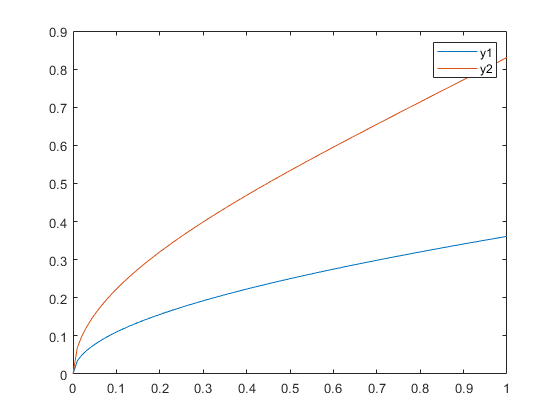 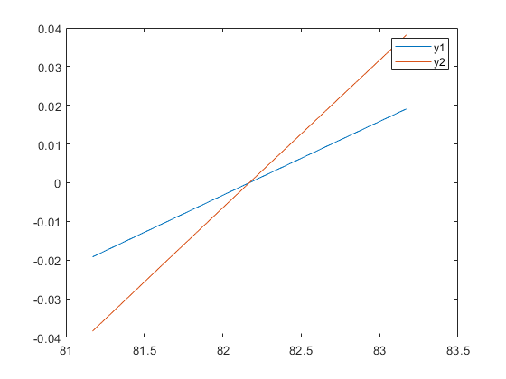 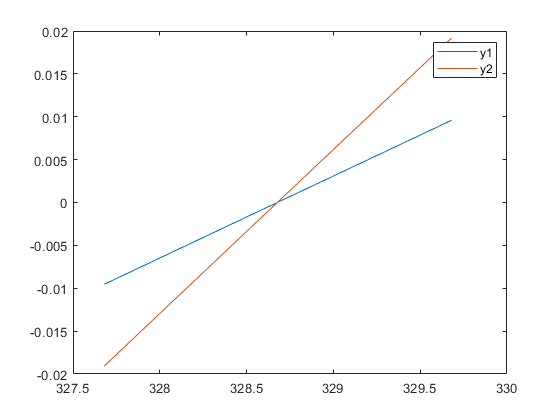
#3
---------------------------------------
#3(a)
clear;clc;close all [x, y] = meshgrid(-4:0.1:4); T = y./(x.^2+y.^2); figure() surf(x,y,T) title("$\frac{y}{x^2+y^2}$ 3D Plot",'FontSize',15,'interpreter','latex') figure() contour(x,y,T, 30,'ShowText','on') title("$\frac{y}{x^2+y^2}$ 2D Plot",'FontSize',15,'interpreter','latex')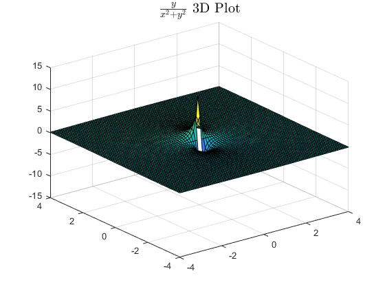 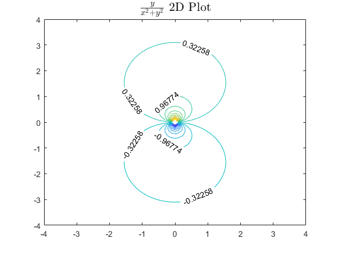
#3(b)
clear;clc;close all [x, y] = meshgrid(-10:0.1:10); T = log(x.^2+y.^2); figure() surf(x,y,T) title("$\ln(x^2+y^2)$ 3D Plot",'FontSize',15,'interpreter','latex') figure() contour(x,y,T,'ShowText','on') title("$\ln(x^2+y^2)$ 2D Plot",'FontSize',15,'interpreter','latex')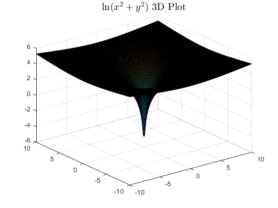 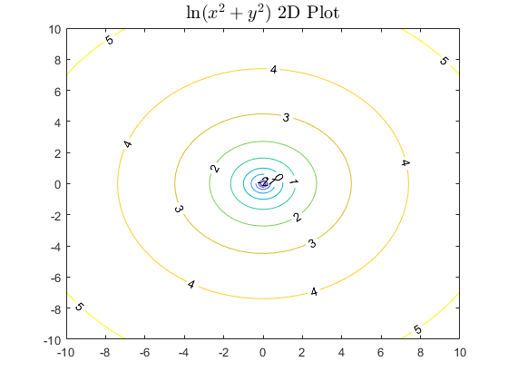
#3(c)
clear;clc;close all [x, y] = meshgrid(0:0.1:10,0:0.1:pi()); len = size(x); for i = 1:len(1) for j = 1:len(2) f = @(n) exp(-(2.*n-1).*x(i,j)).*sin((2.*n-1).*y(i,j))./(2.*n-1); T(i,j) = 4*limsum(f,0)/pi(); end end figure() surf(x,y,T) title("$\frac{4}{\pi}\sum_{n=1,3,5,...}^{\infty}\frac{1}{n}\exp^{-nx}\sin{ny}$ 3D Plot",'FontSize',15,'interpreter','latex') figure() contour(x,y,T,'ShowText','on') title("$\frac{4}{\pi}\sum_{n=1,3,5,...}^{\infty}\frac{1}{n}\exp^{-nx}\sin{ny}$ 2D Plot",'FontSize',15,'interpreter','latex')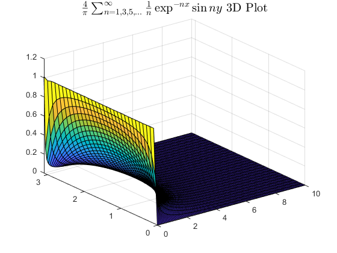 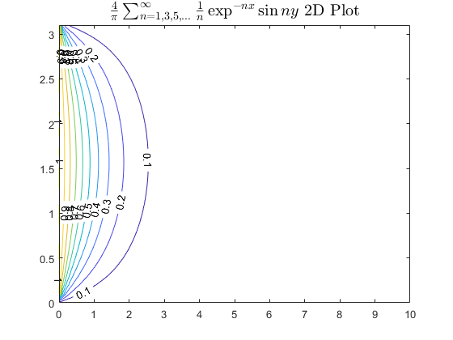
#3(d)
clear;clc;close all [x, y] = meshgrid(0:0.1:10,0:0.1:pi()); T = 2.*atan2(sin(y),sinh(x))./pi(); figure() surf(x,y,T) title("$\frac{2}{\pi}\tan^{-1}{(\frac{\sin{y}}{\sinh{x}})}$ 3D Plot",'FontSize',15,'interpreter','latex') figure() contour(x,y,T,'ShowText','on') title("$\ln(x^2+y^2)$ 2D Plot",'FontSize',15,'interpreter','latex')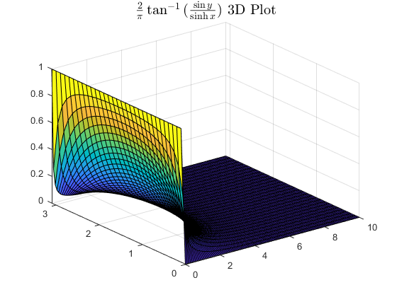 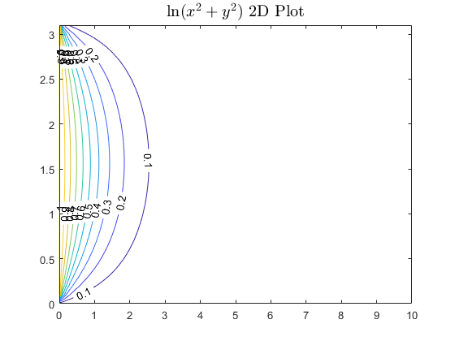
#4
---------------------------------------
#4(a)
#4(b)(1)
clear;clc;close all t = 0:0.01:50; x = sin(t./4); plot(t,x) grid() title("$\sin{\frac{t}{4}}$",'FontSize',15,'interpreter','latex')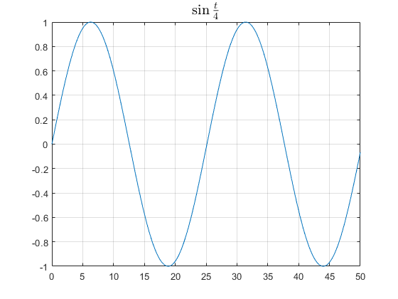
#4(b)(2)
clear;clc;close all t = 0:0.01:50; x = sin(5.*t./2); plot(t,x) grid() title("$\sin{\frac{5t}{2}}$",'FontSize',15,'interpreter','latex')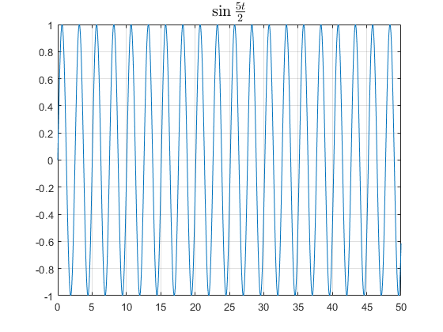
#4(b)(3)
clear;clc;close all t = 0:0.01:50; x = sin(t./4).*sin(5.*t./2); plot(t,x) grid() title("$\sin{\frac{t}{4}}\sin{\frac{5t}{2}}$",'FontSize',15,'interpreter','latex')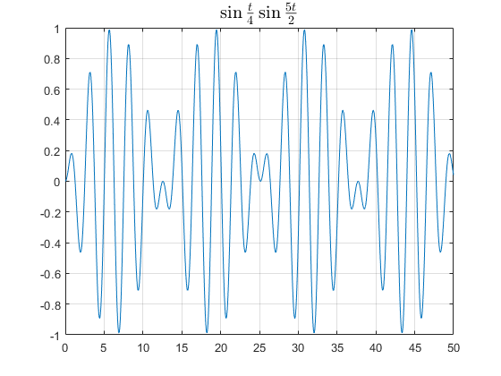
#4(c)
clear;clc;close all global w0 omega w0 = 1; omega = 1; [t, x] = ode45(@vibration_eqn, [0 10], [0; 0]); plot(t,x) legend('x','dx/dt') grid() title("")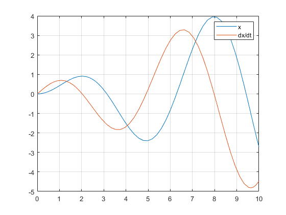
#5
---------------------------------------
#5(a)
clear;clc;close all [x, y] = meshgrid(0:0.1:10,0:0.1:pi()); len = size(x); for i = 1:len(1) for j = 1:len(2) f = @(n) exp(-(2.*n-1).*x(i,j)).*sin((2.*n-1).*y(i,j))./(2.*n-1); T(i,j) = 4/pi()*limsum(f,0); end end figure() surf(x,y,T) title("$\frac{4}{\pi}\sum_{n=1,3,5,...}^{\infty}\frac{1}{n}\exp^{-nx}\sin{ny}$ 3D Plot",'FontSize',15,'interpreter','latex') figure() contour(x,y,T,[.1 .3 .5],'ShowText','on') title("$\frac{4}{\pi}\sum_{n=1,3,5,...}^{\infty}\frac{1}{n}\exp^{-nx}\sin{ny}$ 2D Plot",'FontSize',15,'interpreter','latex')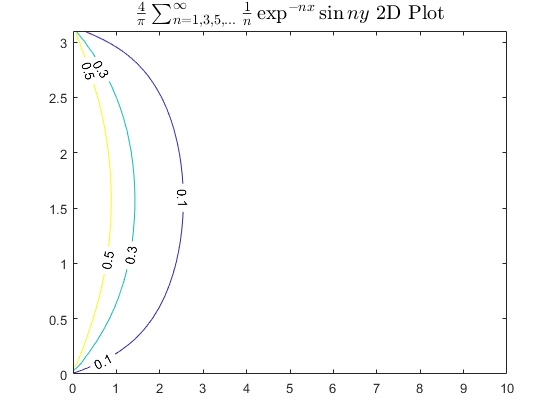
#5(b)
clear;clc;close all [x, y] = meshgrid(0:0.1:10,0:0.1:pi()); T = 2./pi().*atan2(sin(y),sinh(x)); figure() surf(x,y,T) title("$\frac{2}{\pi}\tan^{-1}{(\frac{\sin{y}}{\sinh{x}})}$ 3D Plot",'FontSize',15,'interpreter','latex') figure() contour(x,y,T,[.1 .3 .5],'ShowText','on') title("$\ln(x^2+y^2)$ 2D Plot",'FontSize',15,'interpreter','latex')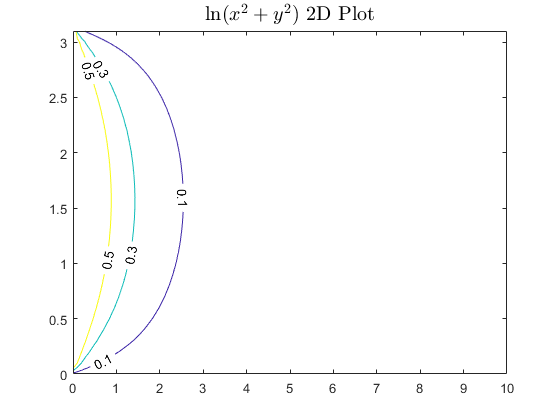
function of #1
function sum = limsum(f,output) sum = 0; n = 1; while 1 error = f(n); sum = sum + error; if abs(error) < 1e-6 break end n = n+1; end if output == 1 fprintf("Iteration times: %d \nValue: %f \nError: %f\n\n", n, sum, error) end end
Iteration times: 29 Value: 0.625000 Error: 0.000001
function of #4
function dydt = vibration_eqn(t, y) global w0 omega dydt = [y(2); -w0^2*y(1)+cos(omega*t)]; end